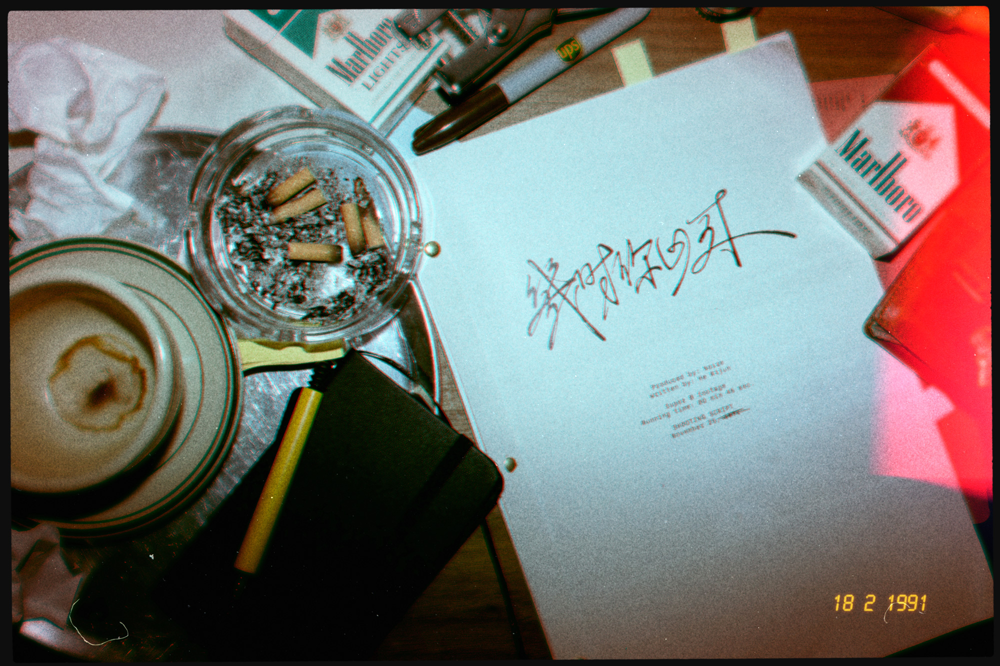
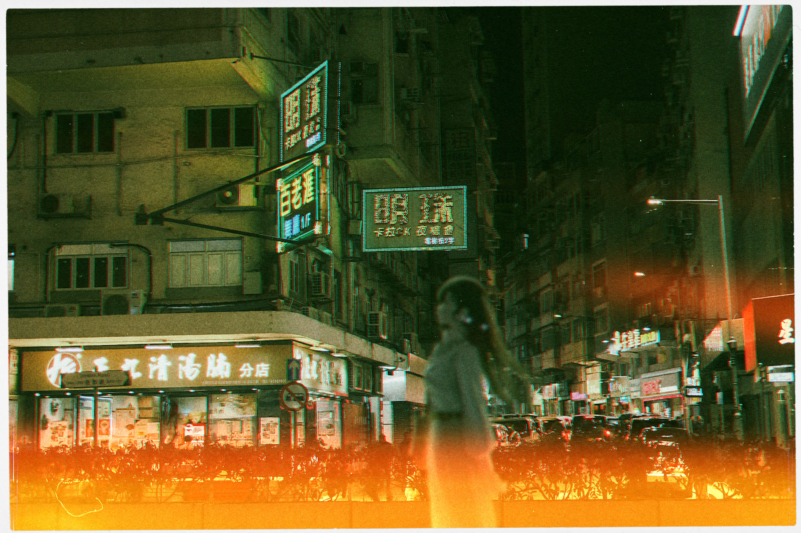

접속할 채널을 선택해 주십시오.
| 작성자 (IP) | 내용 |
|---|---|
|
NoireFan99 (203.252.***.***) |
오늘 뉴스 뜬 거 봤어? 수사 종결이라니... 진짜 사망한 거야? 너무 충격이다... 이번에 개봉할 영화가 <거리 너머의 그림자> 이후의 최다 수상작이 될 수 있을지 기대하고 있었는데... 199X-02-27 23:14:02 |
|
익명_07 (14.32.***.***) |
데뷔작이었던 <혼돈>의 결말부 반전은 당시 충격 그 자체였지. 그렇게 시간이 흘렀지만, 아직도 강렬하고 세련된 작품이라고 생각해. 실종은 안 믿음. 시신을 못 찾았잖아? 어쩌면 자기 영화처럼 신분 세탁하고 어딘가 숨어 살고 있을지도 몰라. 199X-02-27 23:30:15 |
|
트뤼포 (88.109.***.***) |
명작은 영원불멸하리! 199X-02-27 23:33:37 |
|
C07제작위 (114.16.***.***) |
사실 난 <스묄라의 얼음>을 가장 좋아했어... 망작이라고 하는 것들은 뭐야? 본인이 이해를 못 했다고 작품성이 떨어지는 건 아니라고. 알못들. 199X-02-27 23:36:12 |
|
시네필리아 (203.30.***.***) |
@C07제작위 난 누아르 감독 초기 작품이 메이저인 세계선에 살고 싶진 않거든? 그래도 자제하지 않았던 그때의 작품들이 그립기도 해. 내 닉네임 좀 봐라. 199X-02-27 23:41:53 |
|
Yiufai (105.100.***.***) |
<화요춘희일>은 아직도 자주 즐겨보는 영화입니다. 누아르 감독의 작품에서 무언가를 따뜻하게 바라보는 시선을 느낄 수 있을 거라고 생각도 못 했거든요. 팬들은 의견이 갈리겠지만...나는 이 작품부터 느껴지는 다정함이 좋았어요. 199X-02-27 23:51:43 |
|
0o0o (76.111.***.***) |
이 사람 <마도형사 : C07> 때문에 소문 안 좋지 않았어? 온갖 음모론의 주인공이 결국 실종사했다는 게 아이러니하네. 199X-02-27 23:53:57 |
|
완장 (39.208.***.***) |
@0o0o 신고완. 어그로에 먹이주지 말 것. 199X-02-27 23:59:10 |
|
UTTA (211.204.***.***) |
▶▶▶진실을 은폐하지 마라◀◀◀ [단독] 누아르, 사라지기 전 유언장 준비 정황 포착 측근 “의도적으로 준비하고 있었던 것 같았다”… 실종인가, 아니면 감독의 치밀한 연출인가  |
|
Monster Designer (131.76.***.***) |
오늘 아침 게시판에 붙어 있던 영화 촬영 공지를 봤는데… 진짜 그 ‘누아르 감독’이야? 192X-12-02 13:25:12 |
|
경비원_0305 (103.201.***.***) |
네. 생각하시는 그 누아르 감독이 맞아요. C07을 연기하셨던 기성 씨도 오신 것 같아요. 192X-12-02 14:06:10 |
|
Monster Designer (131.76.***.***) |
안녕! 나는 제시카야! 이렇게 사용하는 거 맞아? 192X-12-02 16:23:05 |
|
Monster Designer (131.76.***.***) |
아, 방금 건 '@귀여운 아기 사슴'이 실수로 올려서... @Monster Designer 사용법은 그게 맞아! 그치만 이거 내 계정이니까, 나중에 계정 만들어줄게. 192X-12-02 16:25:14 |
|
Monster Designer (131.76.***.***) |
아무튼...지금 가방에 말도 안되는 유명인사가 둘이나 있는 거잖아? 대체 무슨 일이람... 192X-12-02 16:28:22 |
|
The nerdy nerd (233.111.***.***) |
누아르 감독이라니...그 누아르 감독이 가방으로 들어왔다는 거야?! 거짓말이지?! 192X-12-04 23:15:36 |
|
Monster Designer (131.76.***.***) |
늘 감탄하는 건데, 버틴의 인맥은 도대체 어떻게 형성되어 있는 거야? 192X-12-05 00:06:20 |
|
관리자씨 (88.133.***.***) |
역시 우리 보스네~♫ 언젠가 더 엄청난 사람을 데려올 것 같은 느낌! 192X-12-05 03:17:58 |
|
조수 (100.209.***.***) |
촬영에 협력해주신 모든 분들, 다시 한 번 감사의 말씀 드립니다. 여러분들의 협력 덕분에 영화가 무사히 완성되었으니, 아래에서 확인해 주시기 바랍니다.  |